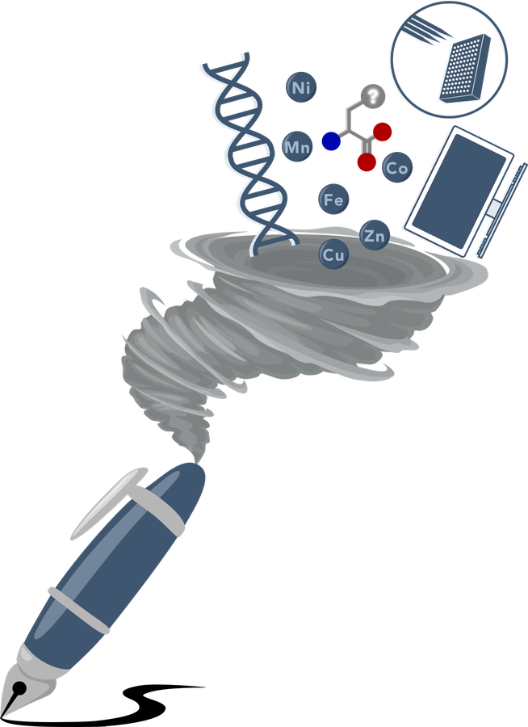
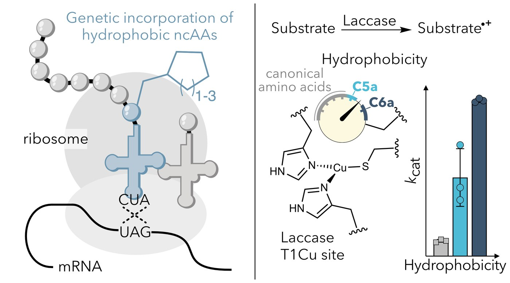
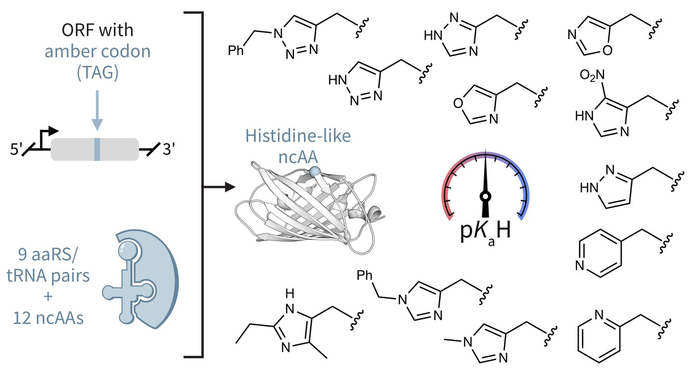
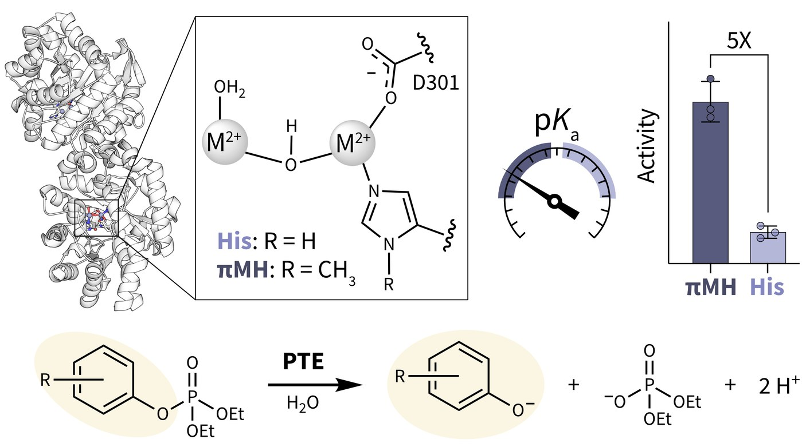
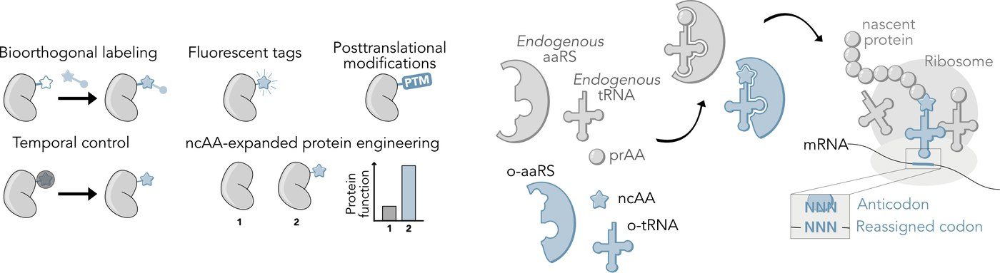

Publications

⧧ = equal contribution · * = corresponding author
Zenodo datasets · Addgene deposits

⧧ = equal contribution · * = corresponding author
Zenodo datasets · Addgene deposits

Fischer S⧧, Natter Perdiguero A⧧, Lau K, Deliz Liang A*. 2026, Nature Chemistry. DOI: 10.1038/s41557-026-02116-7 · BioRxiv: 10.1101/2025.02.09.636911

Natter Perdiguero A⧧, Fischer S⧧, Lischke AR, Manser BP, Deliz Liang A*. 2026, JACS. DOI: 10.1021/jacs.5c19599 · BioRxiv 2025: 10.1101/2025.11.04.686677

Manser BP, Deliz Liang A*. 2026, Biochemistry. DOI: 10.1021/acs.biochem.5c00768

Natter Perdiguero A, Deliz Liang A*. CHIMIA 2024, 78, 22. DOI: 10.2533/chimia.2024.22
Miró-Vinyals C, Stein A, Fischer S, Ward TR, Deliz Liang A*. ChemBioChem. 2021. DOI: 10.1002/cbic.202100424
Fischer S, Ward TR*, Deliz Liang A*. ACS Catalysis. 2021, 11, 6343.
Vallapurackal J, Stucki A, Deliz Liang A, Klehr J, Dittrich PS, Ward TR. Angew. Chem., Int. Ed. 2022.
Stein A, Deliz Liang A, Sahin R, Ward TR. J. Organomet. Chem. 2022, 962, 122272.
Liang AD, Serrano-Plana J, Petterson RL, Ward TR. Acc. Chem. Res. 2019, 52, 585.
Beranek V, Reinkemeier CD, Zhang MS, Liang AD, Kym G, Chin JW. Cell Chem. Biol. 2018, 25, 1067.
Zhang SM, Brunner SF, Huguenin-Dezot N, Liang AD, Schmied WH, Rogerson DT, Chin JW. Nat. Methods. 2017, 14, 729.
Liang AD, Lippard SJ. J. Am. Chem. Soc. 2015, 137, 10520.
Wang W, Liang AD, Lippard SJ. Acc. Chem. Res. 2015, 48, 2632.
Loas A, Radford RJ, Liang AD, Lippard SJ. Chem. Sci. 2015, 6, 4131.
Liang AD, Lippard SJ. Biochemistry 2014, 53, 7368.
Liang AD, Wrobel AT, Lippard SJ. Biochemistry 2014, 53, 3585.
Wrobel WT, Johnstone TC, Liang AD, Lippard SJ, Rivera-Fuentes P. J. Am. Chem. Soc. 2014, 136, 4697.
Dumarieh R, D’Antonio J, Deliz-Liang A, Smirnova T, Svistunenko DA, Ghiladi RA. J. Biol. Chem. 2013, 288, 33470.